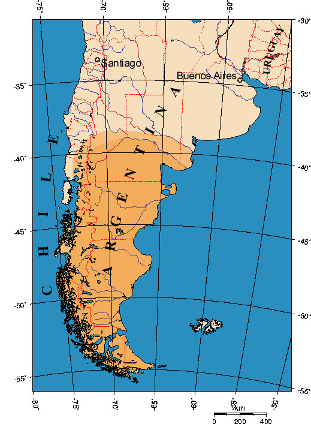

Patagonia (Spanish pronunciation: [pataˈɣonja]) refers to a geographical region that encompasses the southern end of South America, governed by Argentina and Chile. The region comprises the southern section of the Andes Mountains with lakes, fjords, temperate rainforests, and glaciers in the west and deserts, tablelands and steppes to the east. Patagonia is bounded by the Pacific Ocean on the west, the Atlantic Ocean to the east, and many bodies of water that connect them, such as the Strait of Magellan, the Beagle Channel, and the Drake Passage to the south.
The Colorado and Barrancas rivers, which run from the Andes to the Atlantic, are commonly considered the northern limit of Argentine Patagonia. The archipelago of Tierra del Fuego is sometimes included as part of Patagonia. Most geographers and historians locate the northern limit of Chilean Patagonia at Huincul Fault, in Araucanía Region.
Largest cities